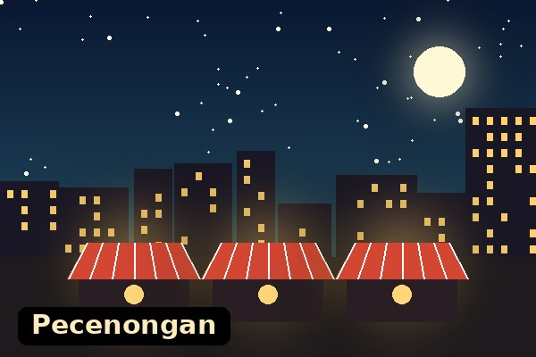
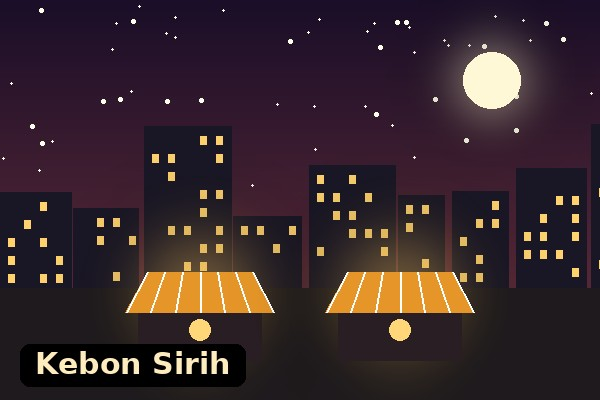
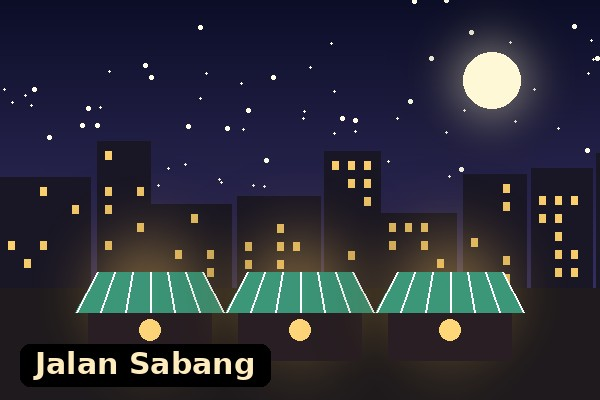
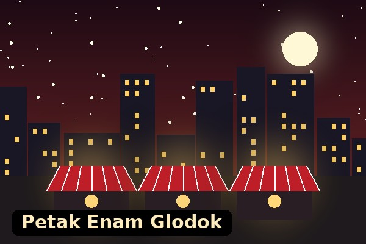

Pecenongan

Dikenal dengan deretan tenda seafood yang buka saat malam. Lihat detail Pecenongan.
Daftar area makan malam yang sering dikunjungi di Jakarta.
| No | Area | Wilayah | Makanan yang Dicari | Perkiraan Jam Ramai |
|---|---|---|---|---|
| 1 | Pecenongan | Jakarta Pusat | Seafood tenda, nasi goreng | 19.00 - 23.00 |
| 2 | Kebon Sirih | Jakarta Pusat | Nasi goreng kambing, sate | 20.00 - 23.00 |
| 3 | Jalan Sabang | Jakarta Pusat | Martabak, sate padang, roti bakar | 19.00 - 23.00 |
| 4 | Petak Enam, Glodok | Jakarta Barat | Bakmi, bakpao, jajanan pecinan | 18.00 - 22.00 |
Catatan: jam ramai hanya perkiraan dan bisa berbeda di tiap tempat.

Dikenal dengan deretan tenda seafood yang buka saat malam. Lihat detail Pecenongan.

Cocok untuk yang mencari makanan berat saat pulang larut.

Pilihannya banyak, dari makanan manis sampai makanan berkuah.

Area pecinan dengan jajanan yang cocok untuk dicoba ramai-ramai.